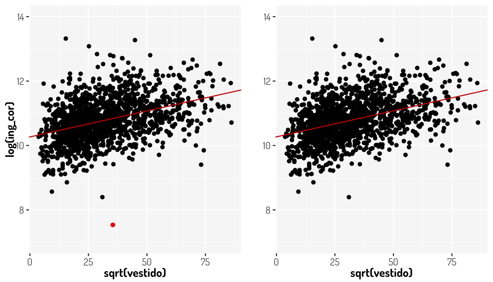
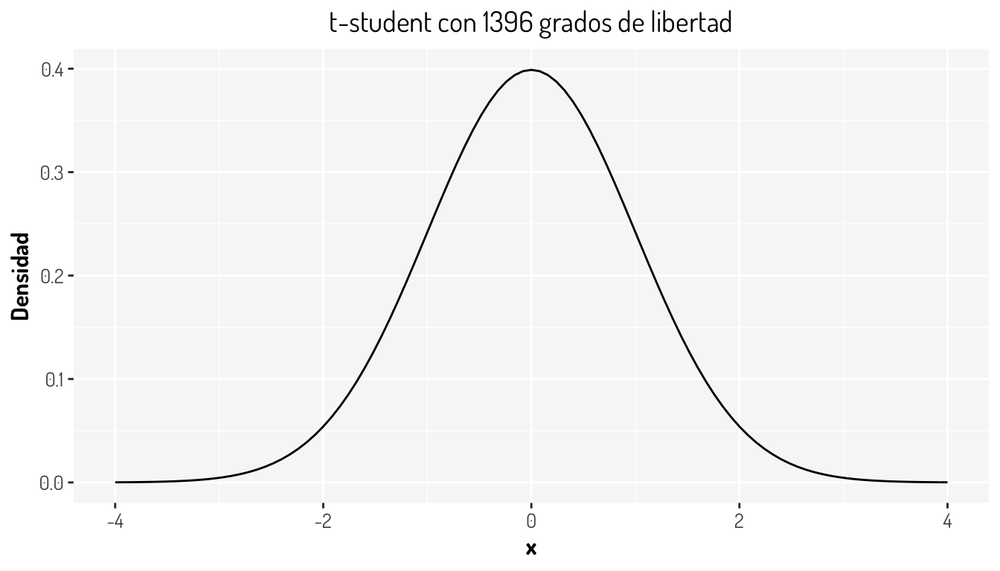
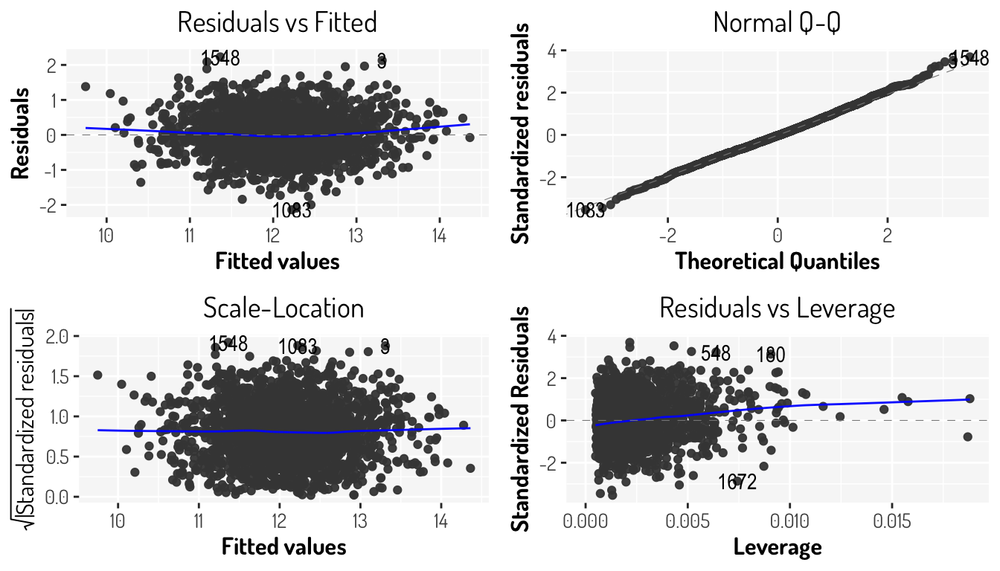
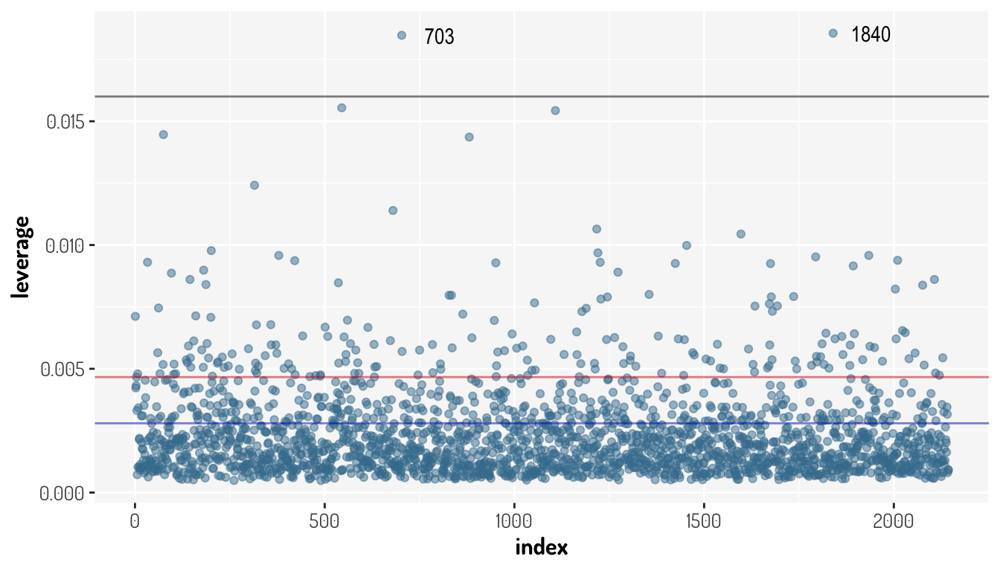
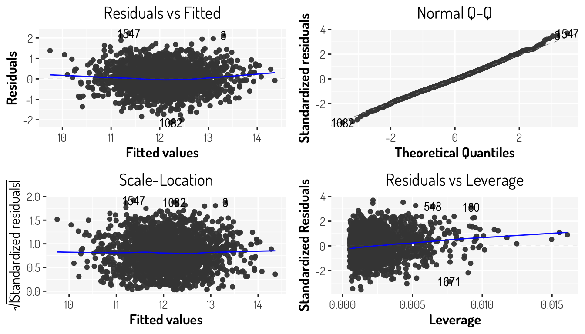
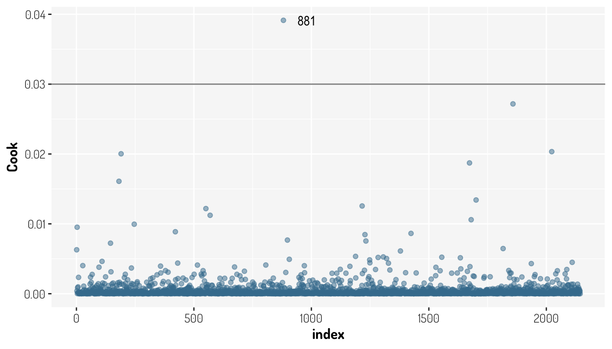
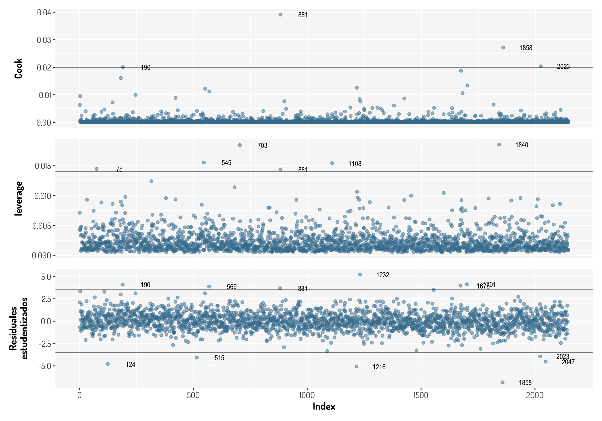

Capítulo 7 Otros puntos importantes de regresión lineal
- Si se específica el tipo de regresión, ¿Hay otras técnicas de modelaje?
¡Claro! existen muchísimas técnicas de modelaje, en cuanto a la regresión tenemos otros tipos además de la lineal, como la regresión logística, poisson, polinómica, splines, etc.
- ¿El modelo es lineal en que sentido?
Es lineal en sus coeficientes, es decir que los siguientes modelos también son lineales:
\[ \begin{array}{c} \mu\left\{Y|X_1, X_2\right\} = \beta_0+\beta_1X_1+\beta_2X_2\\ \mu\left\{Y|X_1\right\} = \beta_0+\beta_1X_1+\beta_2X_1^2\\ \mu\left\{Y|X_1, X_2\right\} = \beta_0+\beta_1X_1+\beta_2X_1^2+\beta_3X_1X_2\\ \mu\left\{Y|X_1, X_2\right\} = \beta_0+\beta_1\log(X_1)+\beta_2\log(X_2) \end{array} \]
No hay que olvidar toda la teoría que esta por detrás de tal modelo, como la utilización del procedimiento de mínimos cuadrados para estimar los parámetros del modelo.
¿Es suficiente realizar una regresión con todos los datos “limpios?”
En algunos casos no. Piensen en la paradoja de Simpson, la cual menciona que una tendencia que aparece en varios grupos de datos puede desaparece o invertirse cuando se combinan los grupos. Bajo este enfoque, siempre es bueno segregar la información si se considera que dicha segregación mejorará los resultados del modelo.
- ¿Hay otros métodos para crear un modelo de regresión sin utilizar el método de mínimos cuadrados?
SÍ.
7.1 Comparación de modelos
https://vincentarelbundock.github.io/modelsummary/articles/modelsummary.html
7.2 Análisis de valores influyentes
7.2.1 Outliers
Como ya se ha mencionado, ay algunos datos que nos pueden generar problemas, y por lo mismo previamente se han eliminado algunos datos, como ciertos outliers y ceros en nuestras variables.
Un outlier en nuestro modelo de regresión será aquel que sea lejano a su valor predicho. Para ver esto gráficamente vamos considerar nuestro ejemplo de regresión lineal simple visto en la sección de predicción (\(\log(ing\_cor) = 10.265703 + 0.016142\times \sqrt{vestido}\))
m1 <- mutated_data_income %>% filter(vestido<7500 & vestido>0) %>%
ggplot(aes(x = sqrt(vestido) , y = log(ing_cor))) +
geom_point() + #Hasta aquí los datos
geom_abline(intercept = 10.265703, slope = 0.016142, color = "red3") +
geom_point(data = tibble(x = 35.440514, y = 7.535708), aes(x = x, y = y), color = "red") +
lims(y = c(7, 14)) +
general_theme
m2 <- mutated_data_income %>% filter(vestido<7500 & vestido>0) %>%
filter(vestido!=1256.03) %>%
ggplot(aes(x = sqrt(vestido) , y = log(ing_cor))) +
labs(y = "") +
lims(y = c(7, 14)) +
geom_point() + #Hasta aquí los datos
geom_abline(intercept = 10.267257, slope = 0.016167, color = "red3") +
general_theme
plot_grid(m1, m2, ncol = 2, align = "h")
Le punto rojo es nuestro outlier en nuestro modelo inicial y en la misma subgráfica se aprecia la linea de regresión que se ajusta a tales datos. La segunda gráfica nos muestra la linea de regresión que resultad al omitir dicha observación. Como bien se ve, no se afecta realmente el comportamiento de la linea de regresión, pero veamos como cambiaron en otro aspecto los modelos
data_vestido <- mutated_data_income %>% filter(vestido<7500 & vestido>0)
m1 <- data_vestido %>% lm(log(ing_cor)~sqrt(vestido), data = .)
m2 <- data_vestido %>%
filter(vestido!=1256.03) %>% lm(log(ing_cor)~sqrt(vestido), data = .)
l1 <- m1 %>% summary()
l2 <- m2 %>% summary()
cat(paste0("RSE del Modelo con outlier: ",l1$r.squared, "\n"))RSE del Modelo con outlier: 0.154956818679954cat(paste0("RSE del Modelo sin outlier: ",l2$r.squared))RSE del Modelo sin outlier: 0.15805697613396Si bien el impacto en este caso no se ve tan drástico, este lo puede ser en otros modelos y hay que recordar que el RSE es utilizado para calcular los intervalos de confianza y los \(p-values\), por lo que un cambio tan fuerte para un sólo punto puede tener graves problemas de interpretación.
Para identificar outliers, podemos visualizar dos gráficas: residuales vs valores ajustados y residuales estudentizados vs valores ajustados
res_1 <- (tibble(x = m1$fitted.values, y = residuals(m1)) %>%
ggplot(aes(x = x, y = y)) + geom_point(alpha = 0.5) +
general_theme + labs(x = "Valores ajustados", y = "Residuales"))
res_2 <- (tibble(x = m1$fitted.values, y = rstudent(m1)) %>%
ggplot(aes(x = x, y = y)) + geom_point(alpha = 0.5) +
geom_hline(yintercept = c(-3, 3), alpha = 0.5)+
general_theme + labs(x = "Valores ajustados", y = "Residuales Estudentizados"))
res_1 + res_2
Aveces es difícil determinar si una observación debe ser considerado como outlier con la primera gráfica, pero en la segunda es más sencillo. De acuerdo al libro James et al. (2013), observaciones con residuales estudentizados que son más grandes que 3, en valor absoluto, pueden ser considerados como posibles outliers. Lo cual tiene sentido, ya que al “normalizar” los residuales así, se esta haciendo que estos sigan una distribución \(t-student\) con \(n-k-1\) grados de libertad, en nuestro caso \(df = 1398-1-1 = 1396\)
library(latex2exp)
tibble(x= c(-4, 4)) %>%
ggplot(aes(x = x)) + stat_function(fun = ~dt(.x, 1396)) +
labs(y = "Densidad") +
ggtitle("t-student con 1396 grados de libertad") +
general_theme
Entonces, de acuerdo a lo anterior tenemos, en este caso, 9 outliers.
tibble(x = data_vestido$vestido , y = data_vestido$ing_cor,
fitted_values = m1$fitted.values, rStudent = rstudent(m1)) %>%
mutate(index = row_number()) %>% filter(rStudent< -3 | rStudent>3)# A tibble: 9 × 5
x y fitted_values rStudent index
<dbl> <dbl> <dbl> <dbl> <int>
1 2015. 580698. 11.0 3.69 2
2 1174. 364980. 10.8 3.21 333
3 822. 376175. 10.7 3.41 359
4 1272. 352488. 10.8 3.12 490
5 1256. 1874. 10.8 -5.37 759
6 235. 608965. 10.5 4.55 777
7 636. 479572. 10.7 3.89 1090
8 5350. 12138. 11.4 -3.30 1130
9 959. 4431. 10.8 -3.83 1318Veamos que sucede con nuestro último modelo
filter_data_ToOutliers <- filter_data %>%
mutate(fitted_values = third_model_BX$fitted.values,
rStandar = residuals(third_model_BX),
rStudent = rstudent(third_model_BX),
fitted_values = third_model_BX$fitted.values)
r_third_model1 <- filter_data_ToOutliers %>%
ggplot(aes(y = rStandar, x = fitted_values)) +
labs(x = "Valores ajustados", y = "Residuales") +
geom_point(alpha = 0.5) + general_theme
r_third_model2 <-filter_data_ToOutliers %>%
ggplot(aes(y = rStudent, x = fitted_values)) +
geom_hline(yintercept = c(-3, 3), alpha = 0.5) +
labs(x = "Valores ajustados", y = "Residuales estudentizados") +
geom_point(alpha = 0.5) + general_theme
r_third_model1 + r_third_model2
Es decir, tenemos 20 outliers
filter_data_ToOutliers %>% filter(rStudent< -3 | rStudent>3)# A tibble: 20 × 8
ing_cor transporte alimentos limpieza personales fitted_values rStandar
<dbl> <dbl> <dbl> <dbl> <dbl> <dbl> <dbl>
1 580698. 12326. 37594. 3318. 8520 13.3 2.12
2 114342. 579. 4706. 1131. 805. 11.2 2.10
3 3424. 4090. 8318. 1272. 1643. 12.0 -3.06
4 278952. 10627. 10749. 116. 1050. 11.9 2.60
5 439078. 24949. 9334. 17321. 5266. 13.1 1.99
6 3522. 2765. 7399. 435. 822. 11.6 -2.61
7 364980. 8725. 8421. 25218. 5336. 12.8 1.99
8 654367. 31987. 10202. 9120. 7542. 13.1 2.47
9 109957. 2483. 12722. 131. 26.1 10.9 2.34
10 8951. 2474. 17055. 2337. 2117. 12.2 -2.14
11 1874. 600 6313. 1900. 1322. 11.4 -3.23
12 608965. 2087. 15126. 1745. 3591. 12.2 3.32
13 9748. 8700 10067. 1503. 1943. 12.3 -2.09
14 144248. 600 8601. 618 1437 11.4 2.23
15 150376. 3484. 5484. 71.7 340. 11.1 2.53
16 479572. 16619. 20237. 2093. 615. 12.5 2.63
17 12138. 8890. 8916. 2081. 4420. 12.4 -1.98
18 1941. 15184. 9720. 1008. 7227. 12.6 -4.34
19 10715. 30803. 13526. 10147. 746. 12.8 -2.51
20 4431. 3267. 14908. 1304. 1710. 12.1 -2.89
# … with 1 more variable: rStudent <dbl>Si dicho outlier fue generado por un error de recolección de información, podemos eliminar la observación sin problemas, aunque hay que considerar que si no es el caso, entonces nuestro modelo simplemente no es lo suficientemente bueno para predecir valores que pueden suceder. En este caso vamos a eliminarlos considerando un limite en 3.5.
filter_data_ToOutliers %>%
ggplot(aes(y = rStudent, x = fitted_values)) +
geom_hline(yintercept = c(-3.5, 3.5), alpha = 0.5) +
labs(x = "Valores ajustados", y = "Residuales estudentizados") +
geom_point(alpha = 0.5, color = "#447e9e") +
geom_text(
data = filter_data_ToOutliers %>%
mutate(index = row_number()) %>%
dplyr::filter(rStudent< -3.5 | rStudent>3.5),
aes(label=index), nudge_x = 0.2
)+ general_theme
fourth_model_1 <- filter_data_ToOutliers %>% filter(rStudent>=-3.5 & rStudent<=3.5) %>%
lm(((ing_cor^lambdaBCox_tM-1)/lambdaBCox_tM) ~
log(transporte) + sqrt(alimentos) + log(limpieza) + log(personales),
data = .)
fourth_model_1 %>% summary()
Call:
lm(formula = ((ing_cor^lambdaBCox_tM - 1)/lambdaBCox_tM) ~ log(transporte) +
sqrt(alimentos) + log(limpieza) + log(personales), data = .)
Residuals:
Min 1Q Median 3Q Max
-2.1395 -0.4038 -0.0162 0.3866 2.2298
Coefficients:
Estimate Std. Error t value Pr(>|t|)
(Intercept) 6.8496905 0.1292413 52.999 <2e-16 ***
log(transporte) 0.2514986 0.0134651 18.678 <2e-16 ***
sqrt(alimentos) 0.0057975 0.0004841 11.975 <2e-16 ***
log(limpieza) 0.1593438 0.0171812 9.274 <2e-16 ***
log(personales) 0.1849702 0.0177541 10.418 <2e-16 ***
---
Signif. codes: 0 '***' 0.001 '**' 0.01 '*' 0.05 '.' 0.1 ' ' 1
Residual standard error: 0.6049 on 2127 degrees of freedom
Multiple R-squared: 0.5193, Adjusted R-squared: 0.5184
F-statistic: 574.5 on 4 and 2127 DF, p-value: < 2.2e-16fourth_model_1 %>% autoplot() + general_theme
Comparison_models <- third_model_BX %>% glance() %>%
gather("Estadística", "Tercel Modelo") %>%
dplyr::mutate_if(is.numeric, round, digits = 8) %>%
inner_join(
fourth_model_1 %>% glance() %>% gather("Estadística", "Cuarto Modelo_1") %>%
dplyr::mutate_if(is.numeric, round, digits = 8),
by = "Estadística"
)
Comparison_models# A tibble: 12 × 3
Estadística `Tercel Modelo` `Cuarto Modelo_1`
<chr> <dbl> <dbl>
1 r.squared 0.489 0.519
2 adj.r.squared 0.488 0.518
3 sigma 0.642 0.605
4 statistic 511. 575.
5 p.value 0 0
6 df 4 4
7 logLik -2089. -1951.
8 AIC 4190. 3914.
9 BIC 4224. 3948.
10 deviance 881. 778.
11 df.residual 2139 2127
12 nobs 2144 2132 tests_linearM <- function(model){
shapiro <- model %>% residuals() %>% shapiro.test()
breusch_pagan <- model %>% bptest()
durbin_watson <- model %>% dwtest()
breusch_godfrey <- model %>% bgtest()
p_values <- tibble("Estadística" = c("Shapiro-Wils", "Breusch-Pagan",
"Durbin-Watson", "Breusch_Godfrey"),
"P-value" = c(shapiro$p.value, breusch_pagan$p.value,
durbin_watson$p.value, breusch_godfrey$p.value)) %>%
dplyr::mutate_if(is.numeric, round, digits = 8)
return(list("p-values" = p_values, "vif" = model %>% vif()))
}
fourth_model_1 %>% tests_linearM()$`p-values`
# A tibble: 4 × 2
Estadística `P-value`
<chr> <dbl>
1 Shapiro-Wils 0.0152
2 Breusch-Pagan 0.137
3 Durbin-Watson 0.00000008
4 Breusch_Godfrey 0.00000019
$vif
log(transporte) sqrt(alimentos) log(limpieza) log(personales)
1.412725 1.476318 1.559839 1.655387 Véase que seguimos “manteniendo” el supuesto de homocedasticidad y obtuvimos un mejor p-value para la prueba de normalidad aunque no mejoramos nuestro modelo para las pruebas de independencia, además de que no tenemos problemas de multicolinearidad.
¿Que hubiera sucedido si hubiéramos aplicado estos filtros a los datos del segundo modelo? ¿Hubiéramos conseguido un mejor modelo?
7.2.2 Valores con alto “apalancamiento”
Mientras que en los outliers nos enfocamos a los valores inusuales de la variable respuesta para un \(x_i\), una observación con alto apalancamiento (leverage) tiene un valor inusual para \(x_i\). El leverage de una observación es una medida de la distancia entre los valores de sus variables explicativas y el promedio de los valores de las variables explicativas en todo el conjunto de datos. Observaciones con alto apalancamiento pueden tener una alta influencia en el modelo.
Cuando sólo tenemos una variable explicativa en nuestro modelo, la estadística de apalancamiento queda definida de la siguiente manera:
\[ h_i = \frac{1}{(n-1)}\left[\frac{x_i-\bar{x}}{s_x}\right]^2 + \frac{1}{n} = \frac{(x_i-\bar{x})^2}{\sum_{i^{'} = 1}^n (x^{'}-\bar{x})^2} + \frac{1}{n} \]
En el caso de regresión lineal simple es sencillo detectar este tipo de observaciones, ya que su valor predicho estará fuera del rango normal de las demás predicciones.
Con la ecuación anterior podemos ver que \(h_i\) incrementa con la distancia entre \(x_i\) y \(\bar{x}\). Esta estadística siempre estará entre \(1/n\) y 1 y el leverage promedio para todas las observaciones será igual a \((p+1)/n\) con \(p\) el número de coeficientes, por lo que si una observación tiene un leverage más grande que \((p+1)/n\) podríamos decir que se tiene un alto apalancamiento aunque algunos estadísticos prefieren utilizar como umbral \(2*p/n\).
Ya habíamos retirado algunos outliers, vamos a ver si estas observaciones también son tienen un alto leverage. En R, podemos utilizar la función stats::hatvalues()
filter_data_ToLeverage <- filter_data_ToOutliers %>%
mutate(leverage = third_model_BX %>% hatvalues(),index = row_number())
(Leverage_analysis <- filter_data_ToLeverage %>%
ggplot(aes(x = index, y = leverage)) +
geom_point(alpha = 0.5, color = "#447e9e") +
geom_hline(yintercept = (5+1)/third_model_BX$fitted.values %>% length(),
color = "blue3", alpha = 0.5) +
geom_hline(yintercept = 2*5/third_model_BX$fitted.values %>% length(),
color = "red3", alpha = 0.5) +
geom_hline(yintercept = 0.016, color = "black", alpha = 0.5)+
geom_text(
data = filter_data_ToLeverage %>% dplyr::filter(leverage >=0.016),
aes(label=index), nudge_x = 100
)+ general_theme)
Las lineas de colores tan sólo son distintos umbrales o cortes para establecer que observación tiene un alto apalancamiento. En este caso no tenemos que algún outlier también tiene un alto apalancamiento, lo cual es lo ideal.
fourth_model_2 <- filter_data_ToLeverage %>%
filter(rStudent>=-3.5 & rStudent<=3.5) %>%
filter(leverage< 0.016) %>%
lm(((ing_cor^lambdaBCox_tM-1)/lambdaBCox_tM) ~
log(transporte) + sqrt(alimentos) + log(limpieza) + log(personales),
data = .)
fourth_model_2 %>% summary()
Call:
lm(formula = ((ing_cor^lambdaBCox_tM - 1)/lambdaBCox_tM) ~ log(transporte) +
sqrt(alimentos) + log(limpieza) + log(personales), data = .)
Residuals:
Min 1Q Median 3Q Max
-2.14019 -0.40307 -0.01616 0.38674 2.22978
Coefficients:
Estimate Std. Error t value Pr(>|t|)
(Intercept) 6.8470768 0.1293183 52.947 <2e-16 ***
log(transporte) 0.2510460 0.0134731 18.633 <2e-16 ***
sqrt(alimentos) 0.0058011 0.0004842 11.981 <2e-16 ***
log(limpieza) 0.1602029 0.0174279 9.192 <2e-16 ***
log(personales) 0.1849316 0.0179337 10.312 <2e-16 ***
---
Signif. codes: 0 '***' 0.001 '**' 0.01 '*' 0.05 '.' 0.1 ' ' 1
Residual standard error: 0.6049 on 2125 degrees of freedom
Multiple R-squared: 0.5196, Adjusted R-squared: 0.5187
F-statistic: 574.6 on 4 and 2125 DF, p-value: < 2.2e-16fourth_model_2 %>% autoplot() + general_theme
Comparison_models <- Comparison_models %>%
inner_join(
fourth_model_2 %>% glance() %>% gather("Estadística", "Cuarto Modelo_2") %>%
dplyr::mutate_if(is.numeric, round, digits = 8),
by = "Estadística"
)
Comparison_models# A tibble: 12 × 4
Estadística `Tercel Modelo` `Cuarto Modelo_1` `Cuarto Modelo_2`
<chr> <dbl> <dbl> <dbl>
1 r.squared 0.489 0.519 0.520
2 adj.r.squared 0.488 0.518 0.519
3 sigma 0.642 0.605 0.605
4 statistic 511. 575. 575.
5 p.value 0 0 0
6 df 4 4 4
7 logLik -2089. -1951. -1949.
8 AIC 4190. 3914. 3910.
9 BIC 4224. 3948. 3944.
10 deviance 881. 778. 778.
11 df.residual 2139 2127 2125
12 nobs 2144 2132 2130 fourth_model_2 %>% tests_linearM()$`p-values`
# A tibble: 4 × 2
Estadística `P-value`
<chr> <dbl>
1 Shapiro-Wils 0.0148
2 Breusch-Pagan 0.136
3 Durbin-Watson 0.00000007
4 Breusch_Godfrey 0.00000017
$vif
log(transporte) sqrt(alimentos) log(limpieza) log(personales)
1.413477 1.476237 1.583429 1.680891 Véase que al retirar estas observaciones el modelo no mejoró aunque no empeoro drásticamente.
Otra estadística para determinar la influencia que tiene una observación en el modelo, es la estadística de Cook, la cual mide la influencia general de la observación, es decir que muestra el efecto que tiene omitir tal observación en el modelo de regresión.
\[ D_i = \sum_{j = 1}^n\frac{(\hat{y}_{j(i)}-\hat{y}_j)^2}{p\hat{\sigma}^2} \]
donde \(\hat{y}_j\) es el \(j-ésimo\) valor en el ajuste usando todos las observaciones y \(\hat{y}_{j(i)}\) es el valor de la regresión omitiendo la observación \(i\); \(p\) es el número de coeficientes (se incluye \(\beta_0\)) y \(\sigma\) la varianza estimada desde el modelo. El calculo de esta estadística es costoso ya que se tienen que hacer diferentes modelos de regresión, por lo que se prefiere utilizar una equivalencia
\[ D_i = \frac{1}{p}(r_i)^2\left(\frac{h_i}{1-h_i}\right) \]
donde \(r_i\) es el residual estandarizado aunque algunos autores prefieren los residuales estudentizados.
El umbral que se establezca también dependerá de la información aunque algunos autores sugieren valores cercanos o más grandes que 1 son valores con gran influencia
filter_data_ToCook <- filter_data_ToLeverage %>%
mutate(Cook = third_model_BX %>% cooks.distance())
(Cook_analysis <- filter_data_ToCook %>%
ggplot(aes(x = index, y = Cook)) +
geom_point(alpha = 0.5, color = "#447e9e") +
geom_hline(yintercept = 0.03, color = "black", alpha = 0.5)+
geom_text(
data = filter_data_ToCook %>% dplyr::filter(Cook >= 0.03),
aes(label=index), nudge_x = 100
)+ general_theme)
Es preferible estudiar los valores influyentes y outliers en conjunto, para determinar aquellos valores que tengan más problemas en conjunto
without_axis_x <- theme(axis.ticks.x = element_blank(),
axis.text.x = element_blank())
Cook_analysis <- filter_data_ToCook %>%
ggplot(aes(x = index, y = Cook)) +
geom_point(alpha = 0.5, color = "#447e9e") +
geom_hline(yintercept = 0.02, color = "black", alpha = 0.5)+
geom_text(
data = filter_data_ToCook %>% dplyr::filter(Cook >= 0.02),
aes(label=index), nudge_x = 100, size = 3
)+ general_theme + theme(text = element_text(size=10)) +
labs(x= NULL) + without_axis_x
Leverage_analysis <- filter_data_ToLeverage %>%
ggplot(aes(x = index, y = leverage)) +
geom_point(alpha = 0.5, color = "#447e9e") +
geom_hline(yintercept = 0.014, color = "black", alpha = 0.5)+
geom_text(
data = filter_data_ToLeverage %>% dplyr::filter(leverage >= 0.014),
aes(label=index), nudge_x = 100, size = 3
)+ general_theme + labs(x= NULL) + without_axis_x
ResidualSt_analysis <- filter_data_ToCook %>%
ggplot(aes(x = index, y = rStudent)) +
geom_point(alpha = 0.5, color = "#447e9e") +
geom_hline(yintercept = c(-3.5, 3.5), alpha = 0.5) +
labs(x = "Index", y = "Residuales\nestudentizados") +
geom_text(
data = filter_data_ToOutliers %>%
mutate(index = row_number()) %>%
dplyr::filter(rStudent< -3.5 | rStudent>3.5), size = 3,
aes(label=index), nudge_x = 100)+ general_theme
Cook_analysis / Leverage_analysis / ResidualSt_analysis
Finalmente, vamos a retirar aquellas observaciones que causan mayores problemas y veamos como se comporta nuestro modelo
fourth_model_3 <- filter_data_ToCook %>%
filter(!(index %in% c(881, 190, 1858, 2023, 703, 515))) %>%
lm(((ing_cor^lambdaBCox_tM-1)/lambdaBCox_tM) ~
log(transporte) + sqrt(alimentos) + log(limpieza) + log(personales),
data = .)
fourth_model_3 %>% summary()
Call:
lm(formula = ((ing_cor^lambdaBCox_tM - 1)/lambdaBCox_tM) ~ log(transporte) +
sqrt(alimentos) + log(limpieza) + log(personales), data = .)
Residuals:
Min 1Q Median 3Q Max
-3.2355 -0.4063 -0.0165 0.3863 3.3151
Coefficients:
Estimate Std. Error t value Pr(>|t|)
(Intercept) 6.8390940 0.1334738 51.239 <2e-16 ***
log(transporte) 0.2571418 0.0139177 18.476 <2e-16 ***
sqrt(alimentos) 0.0058523 0.0005006 11.690 <2e-16 ***
log(limpieza) 0.1543125 0.0178434 8.648 <2e-16 ***
log(personales) 0.1843599 0.0184677 9.983 <2e-16 ***
---
Signif. codes: 0 '***' 0.001 '**' 0.01 '*' 0.05 '.' 0.1 ' ' 1
Residual standard error: 0.6263 on 2133 degrees of freedom
Multiple R-squared: 0.5043, Adjusted R-squared: 0.5034
F-statistic: 542.5 on 4 and 2133 DF, p-value: < 2.2e-16fourth_model_3 %>% autoplot() + general_theme
Comparison_models <- Comparison_models %>%
inner_join(
fourth_model_3 %>% glance() %>% gather("Estadística", "Cuarto Modelo_3") %>%
dplyr::mutate_if(is.numeric, round, digits = 8),
by = "Estadística"
)
Comparison_models# A tibble: 12 × 5
Estadística `Tercel Modelo` `Cuarto Modelo_1` `Cuarto Modelo_2`
<chr> <dbl> <dbl> <dbl>
1 r.squared 0.489 0.519 0.520
2 adj.r.squared 0.488 0.518 0.519
3 sigma 0.642 0.605 0.605
4 statistic 511. 575. 575.
5 p.value 0 0 0
6 df 4 4 4
7 logLik -2089. -1951. -1949.
8 AIC 4190. 3914. 3910.
9 BIC 4224. 3948. 3944.
10 deviance 881. 778. 778.
11 df.residual 2139 2127 2125
12 nobs 2144 2132 2130
# … with 1 more variable: Cuarto Modelo_3 <dbl>fourth_model_3 %>% tests_linearM()$`p-values`
# A tibble: 4 × 2
Estadística `P-value`
<chr> <dbl>
1 Shapiro-Wils 0
2 Breusch-Pagan 0.513
3 Durbin-Watson 0.0000346
4 Breusch_Godfrey 0.0000818
$vif
log(transporte) sqrt(alimentos) log(limpieza) log(personales)
1.412271 1.474882 1.573000 1.670096 Con nuestro último modelo ya omitimos valores influyentes, retiramos outliers, tampoco estamos considerando algunos ceros y aplicamos diversas transformaciones, tanto para la variable dependiente y las variables independientes. Con este modelo logramos un modelo con homocedasticidad, al estar considerando una cantidad importante de datos podemos omitir el supuesto de normalidad aunque ay que tener precaución con las predicciones que se lleguen a dar. Otro punto a considerar es que el supuesto de independencia no se logro mejorar y para solucionar dicho problema tendríamos que considerar otro tipo de modelo.
- Unusual Observations
- Modelos de Regresión con R: Diagnósticos parte II
- Applied Statistics with R: Chapter 13 Model Diagnostics
- Regression Diagnostics
- OLS diagnostics: Influential data tests
Aquí se dejan más enlaces:
- R Cookbook, 2nd Edition: 11 Linear Regression and ANOVA
- Beyond Multiple Linear Regression: Chapter 1 Review of Multiple Linear Regression
- Math 261A - Spring 2012: Multiple Linear Regression
- Data Science for Biological, Medical and Health Research: Notes for PQHS/CRSP/MPHP 431: Chapter 29 Multiple Regression: Introduction
References
James, Gareth, Daniela Witten, Trevor Hastie, and Robert Tibshirani. 2013. An Introduction to Statistical Learning. Vol. 112. Springer.